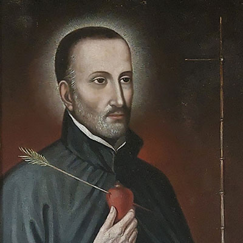

Paragvajski mučenici (3 svetaca)
Svećenik · Misionar · Mučenik
Sv. Roque González de Santa Cruz
Rođen u Asunciónu, poznavao je jezik Guaraníja i kao svećenik djelovao u južnoameričkim misijskim naseljima. Njegovo je poslanje povezano s paragvajskim redukcijama i zajedničkim spomenom Alfonsa Rodrígueza i Ivana del Castilla.

Izvor slike
- Spomendan skupine
- 17. studenoga
- Zaštitništvo
- Domorodačke tradicije i kultura · Naselja, župe, crkve i kapele Južne Amerike
- Slavi se — zajednički izvor
- 17. studenoga
- Zaštitništvo — skupina
- domorodačkih tradicija i kulture te mnogih naselja, župa, crkava i kapela diljem Južne Amerike
Ovaj profil upućuje na zajednički izvor „Sveti Roque González, Alfonso Rodríguez i Juan del Castillo”. Slijedi životopis skupine ili zajednički prikaz mučeništva; zajednički podaci nisu svi osobni podaci ove osobe.
Zajednički životopis
Sveti Roque González de Santa Cruz, paragvajski isusovac, svećenik, misionar i mučenik, rođen je 17. studenoga 1576. u Asunciónu, danas glavnom gradu Paragvaja, tada središtu ogromnog područja Rio de la Plata. Njegovi roditelji bili su španjolski plemići, Don Bartolomé González de Villaverde i Doña María de Santa Cruz. Od djetinjstva je tečno govorio jezik plemena Guaraní. Zaredio ga za svećenika 25. ožujka 1599. Hernando Trejo y Sanabria, biskup Córdobe (Argentina). Najprije je djelovao kao župnik katedrale u Asunciónu, a 1609. stupio u Družbu Isusovu. Posvetio se apostolskom radu u paragvajskim redukcijama, isusovačkim misijskim naseljima. Bio je prvi Europljanin koji je stupio u područje današnje brazilske savezne države Rio Grande do Sul. Djelovao je među južnoameričkim urođenicima iz plemena Guaraní i trpio mnoge nevolje svake vrste, lišen hrane i odjeće. Redukciju svetog Ignacija (San Ignacio) osnovao je 1613. Zatim je 1615. osnovao redukciju Itapúa, na mjestu gdje se danas nalazi Posadas, glavni grad argentinske provincije Misiones. Potom je redukciju 1621. preselio na drugu stranu rijeke Paraná, gdje je kasnije podignut paragvajski grad Encarnación. Dva grada danas povezuje most koji nosi ime Puente Internacional San Roque González de Santa Cruz. Djelo oca Gonzáleza su i redukcije (misijska naselja) Concepción de la Sierra (1619), Candelaria (1627), San Javier, Yapeyú (danas grad u argentinskoj provinciji Corrientes), San Nicolás, Asunción del Iyuí i Caaró (danas u Brazilu), na istočnoj obali rijeke Uruguay. Gradio je kuće i crkve, djelovao kao kateheta, liječnik, arhitekt, tesar, agronom i učitelj, propovijedao i krstio. Prilagodio je svoje apostolsko djelovanje indijanskim običajima, njihovoj kulturi, glazbi i plesu. Odvraćao je svoje vjernike od mržnje i osvetoljubivosti. Branio je svoje stado i od španjolskih kolonizatora, „encomenderosa“, koji su Indijance željeli podjarmiti, maksimalno izrabiti ili prodati u roblje, ali i od domaćih vračeva koji nisu htjeli prihvatiti kršćansku vjeru. I jednima i drugima isusovci su kao branitelji ljudskih prava i sloboda bili trn u oku i željeli su ih protjerati. U tim su krajevima osim gladi vladale i zarazne bolesti, a španjolski vojnici i trgovci robljem često su poduzimali prave lovačke pohode na Indijance. Rezultati misionarevog rada bili su i pored svih tih nevolja čudesni. Mnogi Indijanci su se pokrstili i počeli živjeti životom dostojnim čovjeka. U posljednjem razdoblju života i djelovanja ocu Gonzálezu pridružila su se dvojica mladih španjolskih isuovaca, Alfonso Rodríguez Olmedo (rođen 10. ožujka 1598. u Zamori, Castilla) i Juan del Castillo (rođen 14. rujna 1595. u Belmonteu, provincija Cuenca, Castilla-La Mancha).
Na sjeverozapadu najjužnije brazilske savezne države Rio Grande do Sul živio je tada Nheçu (Ñezú), poglavica i vrač („cacique“) plemena Guaraní, koji je zamrzio misionare i skovao smrtnu zavjeru protiv njih. Ujutro, 15. studenoga 1628, otac Roque završio je misu, izašao iz kapele i namjeravao postaviti novo zvono na stup, koji je otac Alfonso sa skupinom domorodaca dovukao s brda. Kad se otac Roque sagnuo, jedan od zavjerenika udario ga je kamenom sjekirom tako snažno po glavi da je na mjestu ostao mrtav. Zatim su navalili i na oca Alfonsa, koji se baš spremao na misu. Smrskali su mu glavu, a tijela obojice misionara sasjekli su na komade i spalili. Dogodilo se to u misiji Svih Svetih u naselju Caaró, u današnjem Brazilu. Otac Juan del Castillo, koji se nalazio u obližnjem selu, uhvaćen je dva dana kasnije, strahovito mučen i potom ubijen. Kad su isusovci 1767. protjerani iz tih krajeva, ostavili su za sobom 57 uređenih naselja s više od 100 tisuća domorodačkih stanovnika. Papa Pio XI. proglasio je trojicu mučenika 28. siječnja 1934. blaženima. Papa Ivan Pavao II. proglasio ih je 16. svibnja 1988. svetima, u perivoju Parque Ñu Guazú kod Asuncióna, prigodom pastoralnog pohoda Paragvaju. Sveti Roque González, Alfonso Rodríguez i Juan del Castillo zaštitnici su domorodačkih tradicija i kulture te mnogih naselja, župa, crkava i kapela diljem Južne Amerike. Relikvije svetog Roquea Gonzáleza, prvog kanoniziranog paragvajskog sveca, nalaze se u Kapeli mučenika (Capilla de los Mártires) u paragvajskom glavnom gradu Asunciónu.